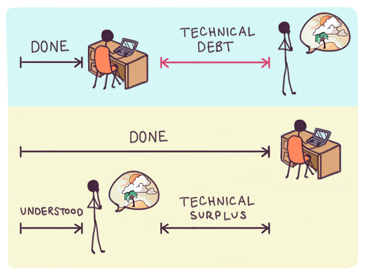
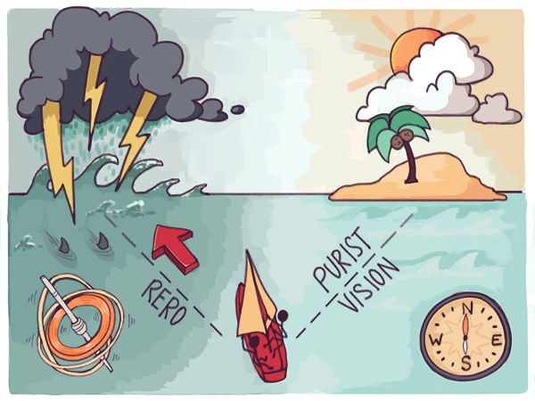

Laufender Code und unendliches Beta
Als der Gmail-Dienst von Google im Juli 2009 fünf Jahre nach seiner Start endlich den Betastatus verliess, verfügte er bereits über mehr als 30 Millionen Nutzer. Gmail war zum drittgrössten kostenlosen E-Mail-Anbieter nach Yahoo und Hotmail geworden und wuchs schneller als je zuvor.1 Für die meisten seiner Benutzer war Gmail schon längst zum hauptsächlich genutzten privaten E-Mail-Dienst geworden.{kind=link}

Die Bezeichnung beta, die auf dem Logo den experimentellen Prototypenstatus kennzeichnete, wurde zu einem Running Gag: Als sie schliesslich entfernt wurde, fügte das Projektteam sogar eine skurrile „back to beta“-Funktion hinzu, mit der Benutzer zum alten Logo zurückkehren konnten. Diese Funktion gehörte zu einem neuen Produktbereich namens Gmail Labs, einer Reihe von Einstellungen, mit denen Benutzer experimentelle Funktionen aktivieren konnten. Die Idee einer unendlichen Betaversion hatte den Weg in eine permanente Infrastruktur innerhalb von Gmail gefunden, die das kontinuierliche Experimentieren ermöglichte. Mittlerweile ist dieses Vorgehen zu einer gängigen Praxis geworden: Jegliche moderne webgestützte Software bietet auf der Produkt-Webseite oder im Backend der Smartphone-App (und darüber hinaus über Entwickler-APIs2) ein Gerüst für ausgiebige fortlaufende Experimente. Ein Teil davon ist sogar für den Nutzer sichtbar. Zusätzlich zu experimentellen Funktionen, mit denen Nutzer der Zeit voraus sein können, bieten zahlreiche Dienste ausserdem „klassische“ Einstellungen, die es ermöglichen, hinter dem Stand der Entwicklungen zurückzubleiben – zumindest für eine gewisse Zeit. Die besten Produkte nutzen die unendlichen Betaversionen, um ihren Nutzern ein reichhaltigeres und selbstbestimmteres Verhalten zu ermöglichen. Abwärtskompatibilität wird auf Situationen der pragmatischen Notwendigkeit beschränkt und nicht als religiöser Imperativ behandelt. Die Gmail-Geschichte enthält eine Antwort auf die offensichtliche Frage zu agilen Modellen, die man sich stellt, wenn man bisher nur Wasserfallmodelle kannte: Wie kann ein ambitioniertes Projekt von Gruppen aus starrköpfigen Individuen vollendet werden, die sich nur am denkbar diffusesten Wegweiser der „maximalen Interessanz“ orientieren und sich weder von puristischen Visionen noch von „Kundenwünschen“ leiten lassen? Die Antwort lautet: Es wird nicht vollendet. Doch anders als in Wasserfallmodellen bedeutet das nicht zwingend, dass auch das Produkt unvollständig sein wird. Es bedeutet, dass die Vision ständig unvollständig bleibt und durch fortlaufende Entwicklungsexperimente unbeschränkt in die verschiedensten Richtungen wachsen kann. Wenn dieser Prozess gut funktioniert, kann aus dem, was Entwickler technische Schulden nennen, etwas werden, das wir als technischen Mehrwert bezeichnen könnten.3 Die Teile des Produkts, deren Entwicklung es an zufriedenstellenden Begründungen mangelt, sind die Bereiche einer schnellen Innovation. Die Lücken in der Vision sind die Quelle von glücklichen Zufällen. (Wenn Sie als Nutzer von Gmail den „Labs“-Bereich erkunden, können Sie einige interessante zufällige Entdeckungen machen: Funktionen, von denen Sie noch gar nicht wussten, dass Sie sie sich wünschen, sind inoffiziell möglicherweise bereits vorhanden.) Die tiefere Bedeutung der Kultur des „unendlichen Beta“ in der Technik wird oft übersehen: Im Industriezeitalter waren Forschungslabore eindrucksvolle, beständige Gebäude, in denen experimentelle Produkte erschaffen wurden. Im digitalen Zeitalter sind Forschungslabore experimentelle Bereiche innerhalb von eindrucksvollen, beständigen Produkten. Wer den allmählichen Niedergang von berühmten Institutionen wie AT&T Bell Labs und Xerox PARC beklagt, verpasst häufig den Aufstieg von noch eindrucksvolleren Laboren im Inneren von bekannten modernen Produkten und den Ökosystemen ihrer Entwickler. Die Idee des Unendlichen Beta ist mittlerweile so etabliert, dass Benutzer erwarten, dass gute Produkte sich schnell und von glücklichen Zufällen beflügelt weiterentwickeln und ihre Fähigkeit, zu lernen und sich anzupassen, ständig herausfordern. Gelegentliche unwesentliche Fehler und Störungen akzeptieren sie als einen Preis, den es sich zu zahlen lohnt. So wie die allgegenwärtigen „Under Construction“-Hinweise auf den frühen statischen Websites der 1990er Jahre dynamischen Websites wichen, die sich praktisch andauernd „under construction“ befanden, haben auch Softwareprodukte einen Charakter der ständigen Weiterentwicklung mit unbestimmtem Ende angenommen. So wie der ungefähre Konsens die Ideenbildung in Richtung einer „maximalen Interessanz“ vorantreibt, treiben auch agile Prozesse die Entwicklung in Richtung der Region der grössten operationalen Unsicherheit, in der Fehler mit grösster Wahrscheinlichkeit auftreten. In gut geführten modernen Softwareprozessen wird das resultierende Chaos nicht nur toleriert, sondern sogar aktiv herbeigeführt. Änderungen werden oft bewusst zum scheinbar schlechtesten Zeitpunkt vorgenommen. Der Steuersoftwareanbieter Intuit beispielsweise ist dafür bekannt, mitten in der Steuersaison zahlreiche Änderungen und Updates zu veröffentlichen.{kind=link}

Konstellationen, die Fehler verursachten, werden nicht ausgegrenzt und zukünftig vermieden, sondern absichtlich und systematisch wiedergeschaffen und näher untersucht. Es wurden sogar automatisierte Systeme entwickelt, die Fehler in Produktionssystemen gezielt herbeiführen. Ein Beispiel ist ChaosMonkey, ein von Netflix entwickeltes System, das Produktionsserver nach dem Zufallsprinzip abschaltet und somit das System dazu zwingt, sich selbst zu heilen oder bei dem Versuch seinen Geist aufzugeben. Die flüchtigen Blicke, die ein Benutzer auf das System des unendlichen Beta erhaschen kann, werden bei weitem in den Schatten gestellt von den unsichtbaren Experimenten, die hinter den Kulissen ablaufen. Das ist weder abwegig noch masochistisch: Es ist notwendig, um verborgene Risiken in experimentellen Ideen frühzeitig offenzulegen und Daten zu sammeln, die dabei helfen können, kollabierende Systeme schnell wieder in Gang zu bringen. Der Ursprung dieser eigentümlichen Philosophie lässt sich auf ein Prinzip zurückführen, das als release early, release often (RERO) bekannt wurde und üblicherweise Linus Torvalds zugeschrieben wird, dem Hauptentwickler des Linux-Betriebssystems,. Dieses Prinzip bezeichnet genau das, was der Name aussagt: Code soll so früh wie möglich und so häufig wie möglich veröffentlicht werden, während er sich in der aktiven Entwicklung befindet. Im Softwarebereich ist die Anwendung dieses Prinzips problemlos möglich, da die meisten Softwarefehler keine lebensbedrohlichen Konsequenzen haben.4 Demzufolge ist es meistens schneller und kostengünstiger, aus Fehlern zu lernen als zu versuchen, sie durch detailgenaue Planungen vorauszuahnen und zu verhindern. Daher wird das RERO-Prinzip in Bezug auf Fehler häufig auch zu fail fast umformuliert. Heutzutage hat die RERO-Mentalität eine so hohe Bedeutung erlangt, dass viele Unternehmen – beispielsweise Facebook und Etsy – darauf bestehen, dass neue Mitarbeiter schon an ihrem ersten Tag eine kleine Änderung an erfolgsentscheidenden Systemen vornehmen. Im Gegensatz dazu setzen Unternehmen, die nach dem Wasserfallverfahren vorgehen, neue Entwickler häufig viele Jahre an verschiedenen Arbeitsplätzen ein, bevor sie ihnen eine nennenswerte Autonomie zutrauen. Um zu verstehen, wie wenig intuitiv das RERO-Prinzip wirklich ist und warum es traditionelle Entwickler nervös werden lässt, stellen Sie sich einfach vor, ein Autohersteller würde schnellstmöglich jeden Prototypen in die „experimentelle“ Massenproduktion geben und beabsichtigen, durch tatsächliche Autounfälle Probleme zu erkennen. Oder denken Sie an Aufseher in einem Fertigungsbetrieb, die in Spitzenbedarfszeiten wahllos Maschinen vom Stromnetz trennen oder sogar zerstören. Selbst die radikalsten Managementmodelle im Produktionsbereich gehen nicht so weit. Management in der physischen Produktion ist im Kontext der Knappheit entstanden und kann entsprechend nur mit Probelmen umgehen, die aus Knappheiten entstehen. Wirklich agile Modelle hingegen tun etwas völlig anderes: sie katalysieren den Überfluss. Die vielleicht am schwersten zu schluckende Folge des RERO-Prinzips kann wie folgt beschrieben werden: Während Entwickler in anderen Bereichen versuchen, die Anzahl der nötigen Veröffentlichungen zu minimieren, streben Softwareentwickler heutzutage eine Maximierung der Veröffentlichungshäufigkeit an. Die passende Analogie des Industriezeitalters ist der Stoff für eine Science-Fiction-Komödie: ein Praktikant, der eine Weltraummission startet, nur um der Besatzung einer Raumstation eine einzige Büroklammer zukommen zu lassen. Ein solches Verhalten macht in einem Wasserfallmodell keinen Sinn, doch in agilen Modellen handelt es sich um einen notwendigen Bestandteil. Wenn Entwickler die sich immer wieder ändernden Richtungen des ungefähren Konsenses zeitnah nachverfolgen wollen, besteht die beste, vielleicht einzige Möglichkeit darin, die Häufigkeit der Veröffentlichungen zu erhöhen. Fehlgeschlagene Experimente können früher und mit niedrigerem Kostenaufwand beendet werden. Erfolgreiche Versuche können schnell in das Produkt integriert werden, da auch versteckte Risiken schnell ausgemerzt werden können. Damit erweist sich ein ungefährer Richtungssinn – der ungefähre Konsens – als ausreichend. Es ist nicht nötig, eine zunehmend unerreichbare utopische Vision anzusteuern. Das wirft eine interessante Frage auf: Was passiert, wenn der ungefähre Konsens von unvereinbaren Meinungsverschiedenheiten durchbrochen wird?[1] Siehe der CNET-Artikel von 2009 Yahoo Mail still king as Gmail lurks. 2015 hatte Gmail knapp eine Milliarde Nutzer. [2] Application Programming Interface bzw. Programmierschnittstelle, ein Mechanismus, der externen Stellen über Programme die Anbindung an ein Produkt ermöglicht. [3] Technische Schulden, ein von Ward Cunningham (dem Erfinder des Wikis) 1992 entwickeltes Konzept, ähnelt dem Konzept der Schulden im ökonomischen Sinne. Üblicherweise bezeichnet es Arbeiten, von denen bekannt ist, dass sie noch erledigt werden müssen, beispielsweise der Ersatz temporärer Behelfslösungen durch ideale Lösungen, und das „Refactoring“ zum Verbessern ineffizient strukturierten Codes. Die „Schuld“ ist die Kluft zwischen der idealisierten Version einer Funktion und der tatsächlich vorhandenen Version. In einer etwas freieren Verwendung kann der Begriff im Rahmen von Wasserfallprozessen auch für nicht fertiggestellte Funktionen in der autoritären Vision stehen, die möglicherweise nur ansatzweise im Code oder als nicht implementierte Spezifikationen existieren. Im Kontext agiler Prozesse sind derartige Schulden, die aus Zweckmässigkeit oder Unabgeschlossenheit entstehen, jedoch nicht notwendigerweise unbedingt zu erledigende Aufgaben. Wenn eine experimentelle Funktion nicht wirklich von den Benutzern angenommen oder durch einen Wendepunkt in der Entwicklung unnötig wird, hat es keinen Sinn, eine Notlösung durch eine idealisierte Lösung zu ersetzen. Der technische Mehrerlös entspricht sinngemäss den unvorhersehbaren Wachstumspotentialen (oder der Optionalität, wie sie Nassim Taleb in Antifragilität beschreibt), die dadurch entstehen, dass Benutzer bestehende Funktionen kreativ und auf unerwartete Weise nutzen. Solche Potentiale erfordern eine Ausweitung der Vision. Der Mehrwerts umfasst den Wert-Überschuss, der sich aus unerwarteter Nutzung ergibt. Wie in der Ökonomie ist ein Projekt mit hohen technischen Schulden in einem fragilen Zustand und anfällig für Zemblanität. Ein Projekt mit einem hohen technischen Mehrwert ist in einem antifragilen Zustand und offen für Serendipität. [4] Dies trifft natürlich nicht auf jede Software zu: Für Code mit lebensbedrohenden Konsequenzen besteht ein anderes Entwicklungssystem. In einem solchen System entwickelter Code entsteht üblicherweise deutlich langsamer und bleibt oft 10 bis 30 Jahre hinter dem aktuellen Stand der Technik zurück. Dies ist einer der Gründe, weshalb die Auffassung entsteht, belanglose Anwendungen würden die Branche dominieren: Es dauert sehr viel länger, bis erfolgsentscheidender Code in lebenswichtigen Anwendungen aktualisiert werden kann.